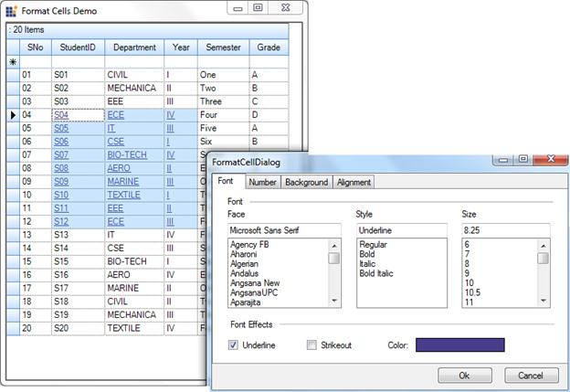

The GridGrouping control provides support to apply styles using a Format Cell dialog as found in Microsoft Excel.
Use Case Scenarios
This feature enables you to dynamically format such cell attributes as cell background color, font, text color, alignment, and more.
Methods
Table 7: Method Table
|
Method |
Description |
Parameters |
Type |
Return Type |
Reference links |
|
GroupingGridFormatCellDialog () |
Uses to wire the Grid with FormatCell Dialog |
GridGoupingControl |
Method (Constructor) |
N/A. |
N/A. |
Sample Link
A demo of this feature is available in the following location:
..\..\\AppData\Local\Syncfusion\EssentialStudio\{Version}\Windows\Grid.Grouping.Windows\Samples\2.0\Appearance\FormatCells Dialog Demo
Adding GridFormatCellDialog To The GridGroupingControl
You can add the cell formatting dialog using the GridFormatCellDialog class. To add the GridFormatCellDialog, pass the GridGroupingControl as a parameter of the GroupingGridFormatCellDialog() method.
The following code illustrates this:
|
[C#]
GroupingGridFormatCellDialog Dialog = new GroupingGridFormatCellDialog(this.gridGroupingControl1); Dialog.ShowDialog();
|
|
[VB]
Dim Dialog As GroupingGridFormatCellDialog = New GroupingGridFormatCellDialog(Me.gridGroupingControl1) Dialog.ShowDialog() |

Figure 323: Format Cell Dialog